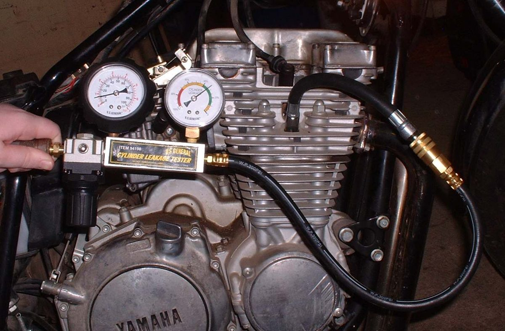
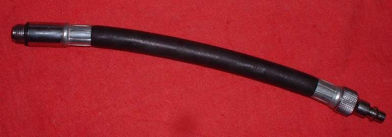

A leak-down test fills the cylinder with compressed air while the piston is at the top and both valves should be closed. The tester shows what share of the air escapes, and you listen to find where it escapes. It is a firmer test than a compression gauge and it points to the leaking part. Most riders will ask a workshop for it.
Safety
- The crankshaft must be locked. Air pressure on the piston can spin the engine suddenly and hurt hands. On a bike with a gearbox, top gear and the rear brake held by a helper is one way; follow the tester and manual instructions.
- Back the tester regulator fully off before connecting air, then open it slowly.
- Wear eye protection.
What the workshop does
- Warms the engine, removes the plug and sets the piston at top dead centre (TDC) on the compression stroke. On a four-stroke this is the TDC where both valves are closed, not the one between exhaust and intake.
- Locks the crankshaft.
- Connects the tester and applies air at the pressure the tester maker states.
- Reads the leakage. The correct way to work it out is: leakage % = (supply pressure minus cylinder pressure) ÷ supply pressure × 100. (The 1988 MAVCC sheet shows confusing arithmetic; this is the correct formula.) Different testers read differently, so the result is compared with the tester maker's chart or with good engines of the same model.
- Listens and feels for escaping air:
| Air comes out at | Leaking part |
|---|---|
| Exhaust pipe | Exhaust valve |
| Air filter box, carburettor or throttle body | Intake valve |
| Oil filler, dipstick or breather | Piston rings or cylinder |
| Bubbles in the radiator filler (liquid-cooled) | Head gasket or cracked head |
| Round the head joint (soapy water bubbles) | Head gasket |
| Two-stroke: crankcase or transfer port side | Rings or crankcase seal; workshop |
- Removes the tester, refits the plug.
What to ask for
- The leakage figure and where the air escaped, written down.
- A valve clearance check before any head work, since tight clearance holds a valve open.
What not to attempt at home
- Using a home compressor without a regulator and a proper tester.
- Turning the engine with the tester attached.
Check your work
- Result recorded with the piston position and test pressure.
If it did not fix the problem
- Valve leak: Check and adjust valve clearance, then Assess the top end (cylinder, piston, valves).
- Ring leak: Assess the top end (cylinder, piston, valves).
- Head gasket on a liquid-cooled engine: Liquid-cooled engine overheats.